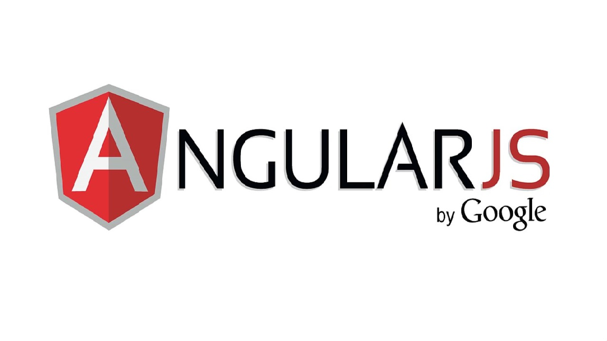
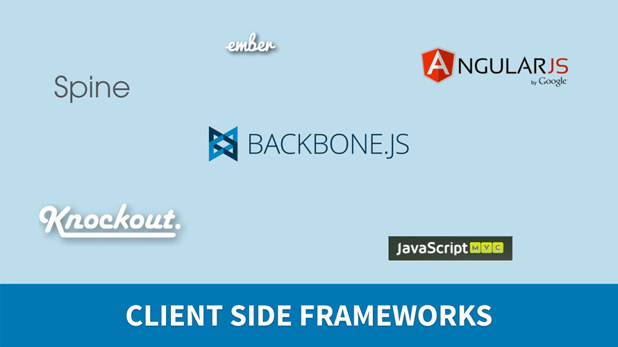
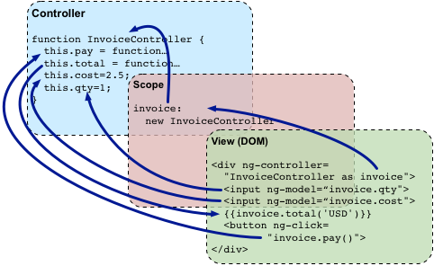
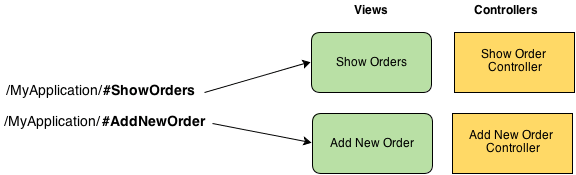

PRESENTANDO A:
Por Mauricio Mijail De La Quintana
Qué es AngularJS
Un framework nuevo de javascript en la capa de cliente que nos permite desarrollorar facilmente nuestras páginas sin necesidad de un codigo complicado código. Separa muy bien la responsabilidad de cada tecnología en su ámbito: CSS, HTML y Javascript, y las comunica cuando lo considera necesario.
¿ Qué es un Framework y su importancia ?
Por qué AngularJS
Característica principal. No manosees el árbol DOM para acceder al valor de un elemento.
// Usando JQuery :(
var titulo = $("#elem").up("li").first("p").down("span.olala").val();
// Usando AngularJS :)
var titulo = $scope.titulo;
Por qué AngularJS
Esto se consigue actualizando la vista automáticamente cuando cambia el modelo, o viceversa. Two-way data binding.

Por qué AngularJS
Disponemos de plantillas que extienden el vocabulario del código HTML para proporcionarnos la introducción de lógica en la representación de nuestra información.
<div ng-controller="AlbumCtrl">
<ul>
<li ng-repeat="image in images">
<img ng-src="{{image.thumbnail}}" alt="{{image.description}}">
</li>
</ul>
</div>
Por qué AngularJS
- Reausability. Permite crear componentes (directivas) fácilmente reutilizables (que permiten aislar totalmente su función, no chocan con otros).
- Testing. Al tener componentes aislados, podemos testear su comportamiento de manera independiente.
- Inyección de dependencias. Si necesitamos hacer uso de un servicio, lo inyectamos en nuestro controlador directamente y funciona.
Que mas necesitaremos

NODEJS
Node.js, esta es la base de todo, la que ha posibilitado la creación del resto de herramientas.
YEOMAN
Yeoman, el director de orquesta, nos permitirá crear un proyecto de 0 usando el resto de las herramientas, nos servirá como punto de partida.
GRUNT
Grunt, un taskrunner, nos permitirá automatizar tareas que se repiten.
BOWER
Bower, es un gestor de dependencias para aplicaciones web ( frontend ) creado por la gente de Twitter.
Data binding
Scope. Es el responsable de detectar los cambios en el modelo y proporciona el contexto a las plantillas.
<!doctype html>
<html ng-app>
<head> ... </head>
<body>
<div ng-controller="GreetCtrl">
Hello {{name}}!
</div>
<div ng-controller="ListCtrl">
<ol>
<li ng-repeat="name in names">{{name}}</li>
</ol>
</div>
</body>
</html>
Conceptos MVC
Controlador. Es el código con la lógica que comunica el modelo con la vista.
Conceptos MVC
Modelo. Son los datos, que junto con la plantilla producen las vistas.

Conceptos MVC
Vistas. Lo que el usuario visualiza. Parte de una plantilla, se funde con el modelo y se renderiza en el árbol DOM.
Veamos el codigo!
Paso 1
Montando la infraestructura
var myApp = angular.module('myApp',[]);
myApp.controller('ContactController', ['$scope', function($scope) {
$scope.contacts = ["hi@email.com", "hello@email.com"];
$scope.add = function() {
$scope.contacts.push($scope.contact);
$scope.contact = "";
}
}]);
- ng-app
- ng-controller
- ng-model
- ng-show
- {{ template_vars }}
Paso 2
Más directivas y servicios
var app = angular.module('myapp', []);
app.directive('helloWorld', function() {
return {
restrict: 'AE',
replace: 'true',
template: 'Hello World!!
'
};
});
- Filtro number. Números decimales.
- ng-cloak. Esperar antes de renderizar la plantilla.
- Watches. Inspeccionando variables del modelo.
- Servicio routeProvider. Enrutador.
- Vistas parciales. Cargar mini-plantillas.
- Tests E2E. Tests End-to-End.